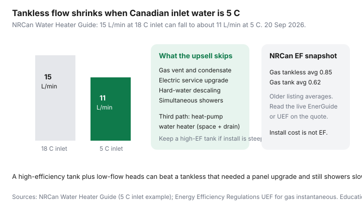

Utilities · Canada
Hot Water Tank vs Tankless in Canada: Cost, Recovery, and Climate Caveats
The tankless upsell is “endless hot water and no standby loss.” In a Canadian January the inlet water can be 5°C, two showers plus a dishwasher is a real simultaneous load, and the electrical panel that looked fine for a 3 kW tank element is not fine for a 27 kW on-demand coil. You can still buy tankless. You should size it for winter, not for the showroom.
This is inlet-temperature and fuel-infrastructure literacy. For the furnace-versus-heat-pump fork see that guide. For laundry’s claim on the tank see cold-water wash.
Disclosure: Heat-pump quote tools are an offer type. Saving Optimizer may earn a commission if we later add partner links. We do not currently claim manufacturer, Enbridge, or contractor partnerships. This is education — not an install quote.
Key takeaways
- Tankless kills standby loss. It does not invent hot water from 5°C inlet at the summer flow rate. NRCan: a unit that delivers 15 L/min at 18°C inlet may deliver about 11 L/min at 5°C.
- Whole-house electric tankless is rarely practical in Canada — NRCan says most units cannot supply an entire house. Gas tankless needs venting, condensate, and often a larger gas line.
- Hard-water municipalities need a descaling plan. Skipping it is how a 0.95 EF becomes a lukewarm shower in year four.
- A heat-pump water heater is a third path: high efficiency, a drain, a cool/damp mechanical room, and noise. It is not a drop-in tank swap in a closet.
- A high-efficiency tank plus low-flow heads can beat a tankless that needed a panel or gas-line upgrade and still showers slowly in January.
Standby losses on tanks vs tankless upsizing needs
A storage tank keeps 150–300 L hot all day. You pay standby — through the jacket, the pipes, and a tired dip tube — whether anyone showers. Electric tanks in Canada are compared on standby loss in watts; gas tanks on energy factor or UEF. Insulation, heat traps, and a pipe wrap are the cheap first moves on a tank you are keeping.
Tankless (instantaneous, on-demand) heats only when a tap opens. NRCan’s Water Heater Guide is blunt: that eliminates continuous standby losses, and listed gas tankless EFs averaged about 0.85 versus about 0.62 for gas tanks in an older NRCan listing snapshot. Newer condensing tankless units post UEFs at or above the federal floor (0.86–0.87 depending on flow class, Energy Efficiency Regulations). The catch is capacity: you size for the worst inlet, not the brochure.

NRCan’s winter example (used 20 Sep 2026): intake water may be as cold as 5°C. A heater that can supply 15 L/min of 58°C water with an 18°C inlet may deliver only about 11 L/min at 5°C. Two showers that were fine in July become a negotiation in January unless you upsized — or kept a tank with a first-hour rating that matches the morning spike.
Gas vs electric tankless electrical and service requirements
| Fuel | What usually has to change | When to walk |
|---|---|---|
| Gas / propane tankless | High-Btu gas line, Category III/IV vent or concentric, condensate drain, maybe a recirculation loop | The “savings” vanish after a $4,000 gas-line and vent package on a house you will sell in three years |
| Electric whole-house tankless | Multiple 40–60 A double-poles; often a 200 A service | NRCan: most electric on-demand units cannot supply an entire Canadian house. Cottage / point-of-use is the honest use |
| Electric tank (status quo) | Usually a single 30 A circuit you already have | Do not “upgrade” to electric tankless to chase standby if the panel is full |
| Heat-pump water heater | 120 or 240 V, condensate, 2–3 m of clearance, a room that can give up heat | A sealed closet with no drain. You will hate the noise and the cold room |
Ask the quote for winter L/min at 5°C inlet to 49°C (or your setpoint), not “unlimited hot water.” Ask whether a recirculation pump will burn the standby you just eliminated. Ask about freeze protection if the unit sits in a garage in Edmonton.
Hard water and maintenance in Canadian municipalities
Prairie and southern Ontario groundwater can be hard. Tankless heat exchangers scale. The maintenance is descaling on the interval in the manual — often annually — plus a filter on the inlet. A tank gets a sacrificial anode and a flush; neglect there is a leak, not a 40% flow cut. Price the flush kit and the plumber’s hour into the operating-cost worksheet. A rental tank from the gas utility is a different product: you are buying the swap when it dies, not the EF.
Heat-pump water heaters as a third path
A heat-pump water heater (hybrid electric) pulls heat from the room and parks it in the tank. Efficiency can look like 2–3× a resistive tank in a space that stays above about 5–10°C. It cools and dehumidifies that room — useful in a laundry corner, hostile in an unheated crawlspace. You need a condensate path. You need to accept a longer recovery than a 4.5 kW element on full blast. Federal Greener Homes is closed to new applicants; if a provincial or utility rebate still exists the week you sign, treat it as a bonus, not the reason.
Operating cost worksheet
- Estimate daily hot-water litres (showers × minutes × L/min, plus dishwasher and laundry). Cold-wash laundry cuts the laundry term — see the companion.
- Multiply by the temperature rise (setpoint minus winter inlet, often 49 − 5 = 44 K in a cold city).
- Convert to kWh or m³ with the heater’s UEF or EF. A 0.95 tankless uses less fuel than a 0.62 tank for the same delivered heat; standby on the tank is extra.
- Price fuel: Enbridge supply as of 1 Jul 2026 lives in the gas-vs-electric heat guide; hydro ¢ from your RPP, Rate D, or BC Hydro step.
- Add amortized install (panel, vent, drain) over the years you will actually stay. A $3,500 delta that saves $80/year is a 44-year story.
When keeping a high-efficiency tank wins
Keep or replace like-for-like when the tank is not leaking, the household peaks are real (three bathrooms at 7 a.m.), the panel or gas line would be the project, or you will move before the EF delta pays the extra install. A new high-UEF or low-standby tank, pipe insulation, a drain-water heat recovery pipe if the stack is open, and 7.6 L/min shower heads are a Canadian stack that does not need a sales deck. Tankless wins when you already have the vent and gas capacity, you hate standby on a large tank in a conditioned room, and the winter L/min number on the submittal is honest.
Sources & date stamps
- NRCan, Water Heater Guide — tank vs tankless; winter inlet as cold as 5°C; 15 L/min at 18°C vs about 11 L/min at 5°C; electric whole-house tankless rarely practical (used 20 Sep 2026).
- NRCan / Energy Efficiency Regulations — household gas instantaneous UEF floors 0.86–0.87 by flow class.
- Enbridge Gas and NRCan energy-efficiency product pages — rental vs purchase and maintenance are local; confirm the week you sign.
Frequently asked questions
Does tankless always cost less to run in Canada?
It usually uses less fuel per litre delivered because standby is gone and UEF is higher. Install, winter derate, and descaling can erase the bill win. Run the worksheet at 5°C inlet.
Why is my tankless shower weaker in January?
Inlet water is colder. NRCan’s example drops 15 L/min at 18°C inlet to about 11 L/min at 5°C. That is physics, not a broken unit.
Can I put a whole-house electric tankless in a 100 A house?
Usually no. NRCan notes most electric on-demand heaters cannot supply an entire Canadian house. Point-of-use or a tank is the honest electric path.
Is a heat-pump water heater the same as a heat-pump furnace?
No. It is a tank that steals room heat to make domestic hot water. It needs space, a drain, and a room that can spare the heat. It does not heat the house.
Should I keep a rental tank?
You are paying for the swap-on-failure, not for the best EF. If the rental fee exceeds the carrying cost of a high-efficiency purchase you will own for 10 years, price an exit. Read the contract.